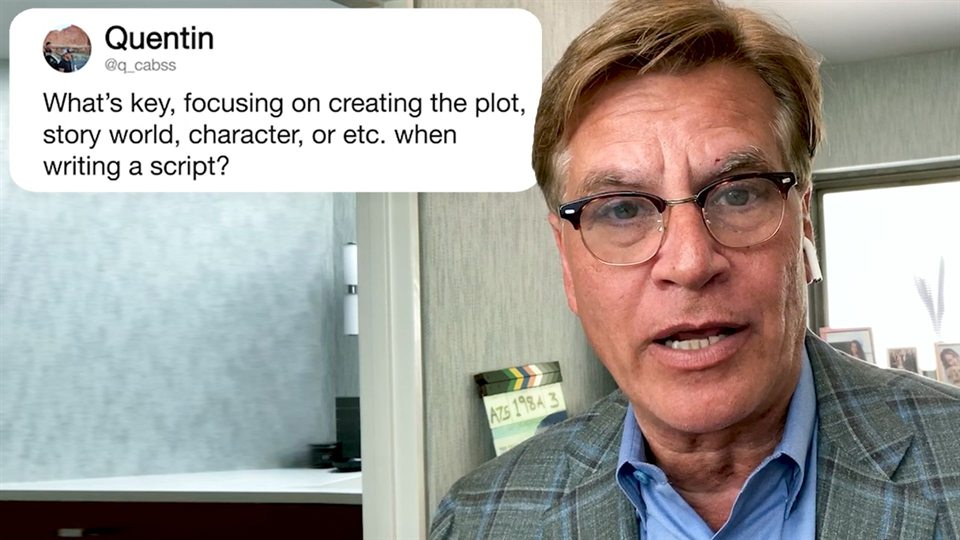
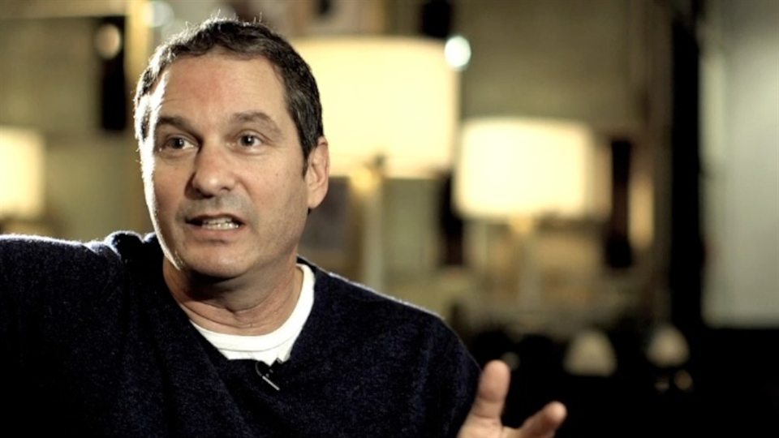
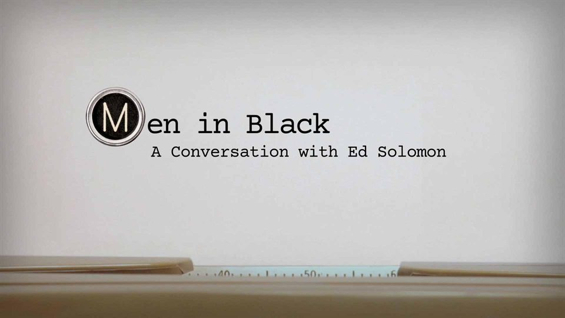

Sources & Case Studies · Media File 001
Three practitioner sources, kept distinct before their shared implications are considered.
The First DraftFinds the Story.Revision Makes It Work.
Three screenwriters describe rewriting under different pressures: discovering what the script became, repairing what earlier pages failed to establish, and allowing the story to evolve when it meets production reality.
The question
What can a writer know at the end that was impossible to know at the beginning?
A first draft does more than put pages in order. It creates evidence for its own revision. By the time the ending exists, the writer may understand the subject differently, recognize that an early promise was never established, or discover that material once considered essential now belongs to another version of the story.
Aaron Sorkin, Scott Frank, and Ed Solomon approach that process from different positions. One describes discovery after completion. One is presented by BFI through opening scenes, words, and the “magic of rewrites.” One traces a screenplay through production, collaboration, disruption, and change. Read together, they do not form a universal system. They show three pressures under which a draft stops being a fixed object.
The distinction is temporal as much as editorial. The writer who revises is not working with the same information as the writer who began. Characters have accumulated consequences. Structural promises have either been fulfilled or exposed as incomplete. A collaborator may have made an abstract problem visible. Revision can therefore be understood as a second encounter with the whole work, not merely a cleaner pass through the same sentences.
Primary source cluster
Three accounts of what makes rewriting necessary.
Each dossier links to the original publisher page. The locally served preview identifies the source without loading a remote image or video player.

Source 01 Retrospective discovery Aaron Sorkin Aaron Sorkin Answers Screenwriting Questions From Twitter Watch source
Source 02 Opening, structure, and words Scott Frank Screenwriters' Lecture with Scott Frank Watch source
Source 03 Evolution through production Ed Solomon Men in Black: A Conversation with Ed Solomon Watch sourceThe first draft produces new knowledge
Reaching the ending changes the meaning of the beginning.
Sorkin answers a direct question about second drafts by describing what completion reveals. A writer may begin on one course and arrive somewhere adjacent. At the end, the script can be about something different from what the writer expected when the opening pages were written.
His compact description—“I don't write scripts, I rewrite scripts”—is not merely a preference for polishing. He describes going back to the beginning, removing what no longer serves the discovered story, bringing necessary material into clearer relief, sharpening weak jokes and dialogue, and reducing excess. The first draft has supplied information that the opening could not yet contain.
That does not mean every writer must retype every page, or that every draft hides one correct subject waiting to be uncovered. It means Sorkin treats completion as a diagnostic event. The end provides a new position from which to judge the route that produced it.
The problem may have started earlier
A late failure can be evidence about an early choice.
Sorkin gives the most specific formulation in this cluster: a problem that appears in the third act may exist because the first act did not establish it properly. The repair therefore moves backward. Fixing the visible symptom at the end would leave its missing cause untouched.
BFI's description of Frank's lecture supplies a related but separate emphasis. It identifies the importance of opening scenes, the challenges of screenwriting, the “magic of rewrites,” and the importance of words, with examples from Get Shorty, Minority Report, The Lookout, and Out of Sight. The description does not provide a detailed Frank method, and it does not justify assigning Sorkin's first-act/third-act statement to him.
The connection is PasteLint's inference: openings are not protected merely because they were written first. Later pages can reveal that an opening prepared the wrong expectation, withheld a needed condition, or emphasized material the finished work no longer needs.
Revision turns taste into diagnosis
Preference becomes useful when it can identify a cause.
Later in the WIRED interview, Sorkin urges writers to move beyond saying that a scene was good or bad. After the immediate experience, the writer should ask what produced the effect. Was it how a joke was set up? Camera movement? The absence or presence of score? The question converts reaction into something specific enough to test.
Some of those causes extend beyond the written page. Performance, camera, score, pacing, dialogue, setup, and structural expectation can all influence the result. That makes the diagnostic habit broader than line editing, while also making it less mystical. Judgment is not simply having better taste. It is learning to locate the choice that created the response.
Revision becomes more deliberate when “this does not work” turns into “this moment asks for information the opening never supplied” or “this line repeats an emphasis the scene has already earned.” Diagnosis does not guarantee the right repair. It gives the writer a clearer object to revise.
The rewrite is not cosmetic
Cleaner sentences cannot repair the wrong structure.
Across the source cluster, rewriting can involve removal, setup repair, attention to openings, sharper language, rebalanced emphasis, and response to constraint. Those operations occur at different scales. A clumsy line may need a better line. A late structural weakness may require an earlier scene. Material can be well written and still belong to the story the writer thought they were making rather than the one they completed.
This is why “make it shorter” is an inadequate summary. Sorkin discusses excess, but reduction is one action inside a larger diagnostic process. Frank's publisher description keeps words and openings in view together. Solomon's account places change inside the longer journey from pre-production through post-production.
When the script meets production
The draft encounters knowledge no solitary draft could contain.
PBS describes Solomon tracing the genesis and evolution of Men in Black from pre-production through post-production. The program description includes being fired and rehired, working with cast and crew, and watching the story change across that process.
That evidence supports a bounded point: a screenplay can continue evolving when it meets collaborators, performance, production conditions, and professional disruption. Those encounters can expose assumptions that pages alone did not test. They can also impose compromises. Nothing in the source establishes that disruption automatically improves a script, or that collaboration always produces the best version.
Solomon's role in this cluster is therefore different from Sorkin's and Frank's. The pressure is not only the writer looking backward from the ending. It is the work meeting a world of people and constraints that did not exist inside the initial act of drafting.
Three sources, three pressures
Keep the differences visible.
-
Sorkin
Discovery after completion
The ending reveals what the script became and sends the writer back through it.
-
Frank
Opening, structure, and words
BFI frames the lecture through opening scenes, rewriting, challenges, and language.
-
Solomon
Evolution through production
The screenplay changes as it encounters disruption, cast, crew, and production.
PasteLint synthesis
Revision as retrospective alignment
This sequence is PasteLint's analysis. It was not supplied by any one speaker.
- 01First draft
Produce the pages that make later knowledge possible.
- 02Discover
Identify what the work became.
- 03Repair
Revisit what earlier pages failed to establish.
- 04Test
Meet collaborators and constraints.
- 05Align
Bring the whole into line with what is now known.
Evidence boundary
What the sources establish, suggest, and do not prove.
Directly established
- Experienced screenwriters treat drafts as changeable.
- Revision may return to earlier pages.
- Openings, setup, words, removal, and production can matter.
- Completion can change a writer's understanding of the story.
Suggested by the synthesis
- Revision applies later knowledge backward.
- Later problems may expose earlier failures.
- Constraints can test assumptions drafting did not.
- Useful judgment becomes diagnostic rather than preferential.
Not established
- One universal rewrite method or formal consensus.
- That every writer should retype every draft.
- That every late problem begins in the opening.
- That disruption, collaboration, or reduction always improves work.
- That screenplay methods map perfectly to all writing.
- That software can discover a work's true meaning.
PasteLint editorial takeaway
A tool can expose a revision decision. It cannot make the writer's discovery.
A revision tool should help writers align a draft with what writing the draft taught them. It should not substitute its own interpretation for that discovery.
Second Draft operates inside a much narrower boundary than screenplay diagnosis. It can reveal exact eligible repetition, remove defined filler, preserve uncertainty and modality, preserve recommendation strength and who is acting, protect tested timing and value patterns, and make transformations reviewable. Those behaviors can reduce mechanical friction without pretending to understand the writer's story.
The distinction matters. A tool may show that one sentence appears twice. It cannot decide whether a repeated image is the work's governing motif. It may remove a bounded filler opening. It cannot know whether the first scene establishes the promise the ending requires. Cleaner prose is useful only while the writer remains responsible for what the work means and what the next draft must become.
What evidence should come next
Move from practitioner account to documented change.
The next layer of evidence should include comparative screenplay drafts, production drafts, script editors, directors discussing specific rewrite decisions, and documented before-and-after scenes. Research on expert revision could test whether retrospective alignment appears outside film writing and where the analogy breaks.
Counterexamples matter too: scripts whose first drafts changed very little, production constraints that weakened a story, or revisions that diagnosed the wrong cause. Those cases could narrow the synthesis and keep an appealing sequence from hardening into a rule it has not earned.
The most useful future cases would connect a stated diagnosis to an observable change: an opening rewritten after the ending clarified the central conflict, a scene removed because production exposed its redundancy, or a line retained because performance gave it a function the page did not reveal. That evidence would make the relationship between later knowledge and earlier repair more inspectable.
Related reading
Judgment, then preservation.
Sources & Case Studies
The New Bottleneck Isn’t Code—It’s Taste
Why judgment becomes more useful when preference can be explained through hierarchy, restraint, and specific decisions.
Editor’s Desk
Clearer Is Not More Certain
Why revision should preserve the strength and limits of a claim instead of manufacturing confidence.